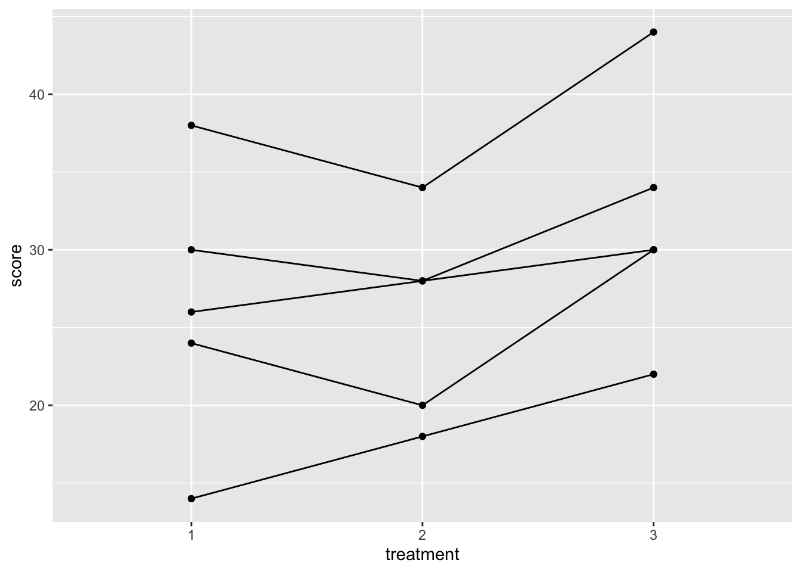

library(rio); library(ggplot2); library(QuantPsyc); library(psych); library(car); library(reshape); library(nlme); library(ez)9 Repeated Measures ANOVA and Mixed Designs
9.1 Repeated-Measures ANOVA
Previous ANOVA designs discussed in class have measured participants at 1 time.
In repeated-measures designs (also called within-subjects designs), participants are measured at different times (2 or more times) either using the same dependent variable measures or different dependent variable measures.
RECALL: t Test for Dependent Samples: used when every participant is exposed to both levels of the independent variable or if two groups of participants are formed in such a way that some relationship exists between the two groups (e.g. participants in group A are matched on intelligence with participants in group B).
Examples: a. Pretest – Treatment/Intervention – Posttest b. Two groups of matched or paired participants are compared on some dependent variable c. We are comparing naturally occurring correlated pairs, such as twins, husband and wife, parent and child, etc.
While ANOVA (with more than 2 groups) is the generalization of the t test for independent samples (2 groups), repeated-measures ANOVA (when participants are measured more than twice) is the generalization of the t test for dependent (correlated) samples.
Examples:
- trends/change across time:
| Vocab. Grade 8 | Vocab. Grade 9 | Vocab. Grade 10 | Vocab. Grade 11 | |
|---|---|---|---|---|
| Participant 1 | ||||
| Participant 2 | ||||
| ... | ||||
| Participant n |
- same participants under different treatments:
| Treatment 1 | Treatment 2 | Treatment 3 | Treatment 4 | |
|---|---|---|---|---|
| Participant 1 | ||||
| Participant 2 | ||||
| ... | ||||
| Participant n |
- same participants are given a series of tests or subtests:
| Information | Vocabulary | Digit Span | Block Design | |
|---|---|---|---|---|
| Participant 1 | ||||
| Participant 2 | ||||
| ... | ||||
| Participant n |
- combination with one-way ANOVA design (one between and one within-subjects variable):
| Posttest | 6 Weeks | 12 Weeks | |
|---|---|---|---|
| Teaching Method 1 | 66 | 64 | 63 |
| Teaching Method 2 | 69 | 65 | 59 |
| Teaching Method 3 | 62 | 56 | 52 |
If the above example was simply a one-way ANOVA using teaching method as the independent variable and the posttest as the dependent variable, we would see that participants do better with teaching method 2. However, if we were interested in the effects of these three teaching methods over time (6 and 12 weeks later), we would see that there is a decline for students with teaching methods 2 and 3 and that participants with teaching method 1 do the best across time. This is an example of a method (between) by time (within) interaction.
A between variable is a grouping/classification variable (e.g., gender, race, social class, age group, method, mental illness).
A within variable is one on which the participants have been measured repeatedly (e.g., time, treatment).
One between and two within design:
Situation 1
|
Situation 2
|
||||
|---|---|---|---|---|---|
| Time | Morning | Afternoon | Morning | Afternoon | |
| Age | 3 years old | ||||
| 4 years old | |||||
| 5 years old | |||||
You can think of the above example as a three-way ANOVA, however, the analysis we conduct is different due to correlations among the participants’ scores which must be taken into account.
9.1.1 Advantages of repeated-measures design
Variability among participants due to individual differences is removed from the error term. We block on each participant.
Blocking is a method of handling concomitant variables that is relatively common in some research areas. Participants are first sorted into groups or blocks that are relatively homogeneous as far as scores on the concomitant variable are concerned, and then treatments are randomly assigned within each block. The method involves treating the concomitant variable explicitly as a factor having certain discrete levels in the analysis (e.g., age categories may be created when examining motor skills of elderly participants).
Repeated measures designs are the ultimate block design because a single person is in each block:
Economy of participants. That is, fewer participants are required for the study.
Suited to address specific research questions: learning, growth, development, etc.
9.1.2 Disadvantages of repeated-measures design
- Fatigue may occur when participants are repeatedly measured.
- Order effects may occur when administering treatments. Counterbalancing the order of treatments is an effective method of minimizing order effects. Counterbalance = all possible orders of treatments are administered:
3 Treatments = 3! = 3 * 2 * 1 = 6 possible orders:
- 1, 2, 3
- 1, 3, 2
- 2, 1, 3
- 2, 3, 1
- 3, 1, 2
- 3, 2, 1
Carryover effects refer to the impact of a previous trial (condition) on a participant’s performance on subsequent trials. Allowing an adequate amount of time to pass between treatments will minimize possible effects.
Risk of attrition due to multiple measurement occasions
9.1.3 Variance partitioning in one-way repeated measures design
| Participant | Treatment 1 | Treatment 2 | Treatment 3 | Row Mean |
|---|---|---|---|---|
| 1 | 30.0 | 28.0 | 34 | 30.67 |
| 2 | 14.0 | 18.0 | 22 | 18.00 |
| 3 | 24.0 | 20.0 | 30 | 24.67 |
| 4 | 38.0 | 34.0 | 44 | 38.67 |
| 5 | 26.0 | 28.0 | 30 | 28.00 |
| Column Mean | 26.4 | 25.6 | 32 | 28.00 |
Completely Randomized Design (One-Way ANOVA):
Sums of Squares: \(S{{S}_{b}}=\sum\limits_{i=1}^{k}{{{n}_{i}}{{({{{\bar{x}}}_{i}}-\bar{x})}^{2}}}\) \(= 5\left[ {{{\left( {26.4-28} \right)}^2} + {\rm{ }}{{\left( {25.6-28} \right)}^2} + {\rm{ }}{{\left( {32-28} \right)}^2}} \right]{\rm{ }} = {\rm{ }}121.60\)
\(S{{S}_{w}}=\sum\limits_{1}{{{({{x}_{i1}}-{{{\bar{x}}}_{1}})}^{2}}+\sum\limits_{2}{{{({{x}_{i2}}-{{{\bar{x}}}_{2}})}^{2}}+\cdots +\sum\limits_{k}{{{({{x}_{ik}}-{{{\bar{x}}}_{k}})}^{2}}}}}\) \(= {(30 - 26.4)^2} + {(14 - 26.4)^2} + ... + {(26 - 26.4)^2}\) \(+ {(28 - 25.6)^2} + {(18 - 25.6)^2} + ... + {(28 - 25.6)^2}\) \(+ {(34 - 32)^2} + {(22 - 32)^2} + ... + {(30 - 32)^2}\) \(=734.4\)
Mean Square Between: \(M{{S}_{b}}=S{{S}_{b}}/(k-1)= 121.6/2 = 60.80\)
Mean Square Within: \(M{{S}_{w}}=S{{S}_{w}}/(N-k) = 734.4/12 = 61.20\)
F ratio: 60.80/61.20 = .99, which is not significant.
Univariate Repeated Measures Analysis (we block on participants):
Error variance is split into two parts in repeated measures designs:
\(S{S_w} = S{S_{bl}} + S{S_{res}}\) where \(S{S_{bl}}\) is the sum of squares for block and \(S{S_{res}}\) is the sum of squares for residuals.
\(S{{S}_{bl}}=k\sum{{{({{{\bar{x}}}_{i}}-\bar{x})}^{2}}}\), where k is the number of repeated measures, \({{\bar{x}}_{i}}\) is the mean for person i, and \(\bar{x}\) is the grand mean.
\(S{{S}_{bl}} = 3[(30.67 – 28)^2 + (18 – 28)^2 + … + (28 – 28)^2] = 696.02\)
The error term for the repeated measures analysis is calculated by:
\(S{S_{res}} = S{S_w} - S{S_{bl}}\)
\(S{S_{res}} = 734.4 – 696.02 = 38.38\)
This removes the variability due to individual differences (696.02) from the error term. What is left is within subject variability across treatments.
Mean Square Residual: \(M{{S}_{res}}=S{{S}_{res}}/(n-1)(k-1) = 38.38/4(2) = 4.80\)
F ratio: \(\frac{{M{S_b}}}{{M{S_{res}}}} = \frac{{60.80}}{{4.80}} = 12.67\)
The critical F value with (k – 1) = 2 and (n – 1)(k – 1) = 4(2) = 8 degrees of freedom is 4.46 at alpha = .05. Our obtained F value is greater than the critical value. Thus, there is a significant effect of treatment, F(2, 8) = 12.67, p < .05.
\[{y_{ij}} = \mu + {\pi _i} + {\tau _j} + {\varepsilon _{ij}}\] - \({y_{ij}}\) the score of subject i for measurement occasion j
\(\mu\) is the grand mean
\(\pi _i\) captures individual differences which is assumed to be constant over time and normally distributed: \({\pi _i} \sim N(0,\sigma _\pi ^2)\). This is the between-subjects variance.
\({\tau _j}\) reflects the time effect which is assumed to be equal for all subjects.
\({\varepsilon _{ij}}\) is the error component which is assumed to be normally distributed (i.e., \({\varepsilon _{ij}} \sim N(0,\sigma _\varepsilon ^2)\)). This the within-subjects variance.
Repeated-Measures ANOVA Table:
| Source of Variaton | Sum of Squares | Degrees of Freedom | Mean Squares | $F$ Statistic |
|---|---|---|---|---|
| Subjects | $SSQ_s = K\sum\limits_{i = 1}^n {{({\mu _i} - \mu)}^2}$ | $n-1$ | $MS _S = {{SSQ_S} \over {n - 1}}$ | $F = {{MS _S} \over {MS _E}}$ |
| Time | $SSQ_T = n\sum\limits_{j = 1}^K {{({\mu _j} - \mu)}^2}$ | $K-1$ | $MS _T = {{SSQ _T} \over {K-1}}$ | $F = {{MS _T} \over {MS_E}}$ |
| Error | $SSQ_E = \sum\limits_{i = 1}^n {\sum\limits_{j = 1}^K {{({y _{ij}} - {\mu _i} - {\mu _j} + {\mu})}^2}}$ | $(n-1)(K-1)$ | $MS _E = {{SSQ _E} \over {(n-1)(K-1)}}$ | |
| Total | $SSQ_y = \sum\limits_{i = 1}^n {\sum\limits_{j = 1}^K {{({y _{ij}} - {\mu})}^2}}$ | $nK-1$ |
9.1.4 Assumptions in repeated measures analysis
Multivariate normality (inspect the distribution of scores within each trial). Fairly robust against non-normality. Can use more stringent alpha level.
Independence of the observations (consider study circumstances to identify any possible violations). Can impact Type I error rate. Use a more stringent alpha level or alternative analyses (e.g., HLM).
Sphericity
- Sphericity requires that the variances of the differences for all pairs of repeated measures are equal
Mauchly’s Test of Sphericity
Sphericity requires that the variances of the differences for all pairs of repeated measures are equal. A significant result indicates that the sphericity assumption is violated.
When sphericity is not met, the F ratio/test in the univariate approach is positively biased (falsely rejecting the null too often). That is, alpha is set at .05, but we are rejecting the null falsely 8-10% of the time.
When sphericity is not met, Epsilon can be used to adjust degrees of freedom for the F test. Epsilon is a measure that indicates the extent to which the covariance matrix deviates from sphericity. When sphericity is met, Epsilon ( \(\varepsilon\)) = 1.
Greenhouse-Geisser \(\varepsilon\). It can be quite conservative. This is recommended when the Greenhouse-Geisser Epsilon < .70.
The Huynh-Feldt \(\varepsilon\) is less conservative. This is recommended when the Greenhouse-Geisser Epsilon > .70.
Another option when sphericity is not met is to use the results from the Multivariate procedure when reporting/interpreting the overall test of mean differences in the primary analysis (omnibus F test). The multivariate procedure (Multivariate Analysis of Variance: MANOVA) compares groups on the dependent variables simultaneously.
Compound Symmetry Assumption
The variance/covariance matrix is assumed to have a compound symmetry structure.
The diagonal of the variance-covariance matrix contains constant variances \(\sigma _\pi ^2 + \sigma _\varepsilon ^2\) (i.e., variances are assumed to be homogeneous across time).
The off-diagonal elements contain constant covariances\(\sigma _\pi ^2\) (i.e., covariancesare assumed to be homogeneous across time).
$${_{yi}} = $$
- The less restrictive assumption of sphericity states that the variance of the differences between each pair of groups (e.g., \({y_{i1}} - {y_{i2}}\), \({y_{i1}} - {y_{i2}}\), \({y_{i2}} - {y_{i3}}\)) is constant.
9.1.5 Alternative Specification of the Variance-Covariance Matrix
Unstructured variance-covariance matrix:All variances and covariances are assumed to be unique.
$${_{yi}} = $$
Autoregressive structure: More proximate observations are more correlated than more distant measures (i.e., the correlation steadily decreases with increasing distance between observations).
$${_{yi}} = $$
Alternative model specifications can be tested using the (nested) likelihood ratio test. The test statistic is defined as –2 times the log of the likelihood ratio which follows a \({\chi ^2}\) distribution (degrees of freedom = difference in the number of parameters in the two covariance structures). The model with a significantly smaller log-likelihood is preferred.
9.1.6 Empirical example
| Participant | Treatment 1 | Treatment 2 | Treatment 3 |
|---|---|---|---|
| 1 | 30 | 28 | 34 |
| 2 | 14 | 18 | 22 |
| 3 | 24 | 20 | 30 |
| 4 | 38 | 34 | 44 |
| 5 | 26 | 28 | 30 |
subj <- 1:5
T1 <- c(30, 14, 24, 38, 26)
T2 <- c(28, 18, 20, 34, 28)
T3 <- c(34, 22, 30, 44, 30)
dat <- data.frame(subj, T1, T2, T3)Convert data from the wide format to the long format
# library(reshape)
dat.long <- reshape(dat, idvar = "subj", v.names = "score", varying = c("T1", "T2", "T3"), timevar = "treatment", direction = "long")
dat.long$treatment <- as.factor(dat.long$treatment)
dat.long subj treatment score
1.1 1 1 30
2.1 2 1 14
3.1 3 1 24
4.1 4 1 38
5.1 5 1 26
1.2 1 2 28
2.2 2 2 18
3.2 3 2 20
4.2 4 2 34
5.2 5 2 28
1.3 1 3 34
2.3 2 3 22
3.3 3 3 30
4.3 4 3 44
5.3 5 3 30Plot the Data
ggplot(dat.long, aes(x=treatment, y=score, group=subj))+
geom_point() + geom_line()
Method 1: Univariate approach using aov()
model1 <- aov(score ~ treatment + Error(subj/treatment), data = dat.long)
summary(model1)
Error: subj
Df Sum Sq Mean Sq F value Pr(>F)
Residuals 1 70.53 70.53
Error: subj:treatment
Df Sum Sq Mean Sq
treatment 2 95.18 47.59
Error: Within
Df Sum Sq Mean Sq F value Pr(>F)
treatment 2 26.7 13.35 0.181 0.837
Residuals 9 663.6 73.73 Method 2: Univariate approach using lme() (multilevel model)
#library(nlme)
model2 <- lme(score ~ treatment, random = ~1|subj/treatment, method = "ML", data = dat.long) #<<
summary(model2)Linear mixed-effects model fit by maximum likelihood
Data: dat.long
AIC BIC logLik
92.70244 96.95074 -40.35122
Random effects:
Formula: ~1 | subj
(Intercept)
StdDev: 6.717142
Formula: ~1 | treatment %in% subj
(Intercept) Residual
StdDev: 1.626497 1.092936
Fixed effects: score ~ treatment
Value Std.Error DF t-value p-value
(Intercept) 26.4 3.498571 8 7.545938 0.0001
treatment2 -0.8 1.385641 8 -0.577350 0.5796
treatment3 5.6 1.385641 8 4.041452 0.0037
Correlation:
(Intr) trtmn2
treatment2 -0.198
treatment3 -0.198 0.500
Standardized Within-Group Residuals:
Min Q1 Med Q3 Max
-0.76160042 -0.36509711 -0.05496085 0.35135689 0.68308491
Number of Observations: 15
Number of Groups:
subj treatment %in% subj
5 15 anova(model2) numDF denDF F-value p-value
(Intercept) 1 8 67.58621 <.0001
treatment 2 8 12.66667 0.0033Method 3: Use the lm function.
model3 <- lm(score ~ treatment + factor(subj), data = dat.long)
summary(model3)
Call:
lm(formula = score ~ treatment + factor(subj), data = dat.long)
Residuals:
Min 1Q Median 3Q Max
-2.400 -1.333 0.000 1.133 2.400
Coefficients:
Estimate Std. Error t value Pr(>|t|)
(Intercept) 29.067 1.497 19.421 5.13e-08 ***
treatment2 -0.800 1.386 -0.577 0.579584
treatment3 5.600 1.386 4.041 0.003728 **
factor(subj)2 -12.667 1.789 -7.081 0.000104 ***
factor(subj)3 -6.000 1.789 -3.354 0.010019 *
factor(subj)4 8.000 1.789 4.472 0.002077 **
factor(subj)5 -2.667 1.789 -1.491 0.174373
---
Signif. codes: 0 '***' 0.001 '**' 0.01 '*' 0.05 '.' 0.1 ' ' 1
Residual standard error: 2.191 on 8 degrees of freedom
Multiple R-squared: 0.9551, Adjusted R-squared: 0.9215
F-statistic: 28.39 on 6 and 8 DF, p-value: 5.647e-05anova(model3)Analysis of Variance Table
Response: score
Df Sum Sq Mean Sq F value Pr(>F)
treatment 2 121.6 60.8 12.667 0.003318 **
factor(subj) 4 696.0 174.0 36.250 3.581e-05 ***
Residuals 8 38.4 4.8
---
Signif. codes: 0 '***' 0.001 '**' 0.01 '*' 0.05 '.' 0.1 ' ' 1Method 4: Us the ezANOVA function from the ez package
# library(ez)
model4 <- ezANOVA(data = dat.long, dv = .(score), wid = .(subj), within = .(treatment), detailed = TRUE, type = 3) #<<Warning: Converting "subj" to factor for ANOVA.model4$ANOVA
Effect DFn DFd SSn SSd F p p<.05 ges
1 (Intercept) 1 4 11760.0 696.0 67.58621 0.001193346 * 0.9412217
2 treatment 2 8 121.6 38.4 12.66667 0.003317760 * 0.1420561
$`Mauchly's Test for Sphericity`
Effect W p p<.05
2 treatment 0.4976852 0.351101
$`Sphericity Corrections`
Effect GGe p[GG] p[GG]<.05 HFe p[HF] p[HF]<.05
2 treatment 0.6656394 0.01218473 * 0.8724018 0.005427211 *9.2 Mixed Designs
9.2.1 One between and one within factor design
The one between and one within factor design is used to identify interactions and main effects in experimental designs with two independent variables. The design has two categorical factors – one between-subjects factor and one within-subjects factor – and a continuous dependent measure.
The primary advantages in using this repeated measures design is that it allows you to assess the impact of a treatment across time, or examine the performance of the same sets of participants under different treatments, and that such designs tend to be more powerful than designs having only between-subjects factors.
Assumptions
Multivariate normality (inspect the distribution of scores in each cell)
Independence of observations (consider the sampling design and study circumstances to identify any possible violations)
Sphericity (assume that this is violated and use an adjusted F test, such as the Greenhouse-Geisser, or use the multivariate test results for the overall tests in the primary analysis)
Between-groups equality of variance (use Levene’s test; examine standard deviations for each group)
Example: The effects of therapy (family therapy group versus control group) on weight gain across time (beginning weight, weight at 12 weeks, and weight at 24 weeks) for teen girls with anorexia.
mydata <- import("data/2_group_repeated_measures.sav")
head(mydata) weight1 weight2 weight3 group
1 83.8 95.2 107.1 1
2 83.3 94.3 109.2 1
3 86.0 91.5 110.0 1
4 82.5 91.9 106.5 1
5 86.7 100.3 104.2 1
6 79.6 82.5 100.2 1mydata$group <- as.factor(mydata$group)
mydata.long <- reshape(mydata, idvar = "id", v.names = "weight", varying = c("weight1", "weight2", "weight3"), direction = "long")
mydata.long$time <- as.factor(mydata.long$time)
ezANOVA(data = mydata.long, dv = .(weight), wid = .(id), between = .(group), within = .(time), type = 3, detailed = TRUE)Warning: Converting "id" to factor for ANOVA.$ANOVA
Effect DFn DFd SSn SSd F p p<.05
1 (Intercept) 1 38 958797.141 2996.4503 12159.15077 3.067707e-49 *
2 group 1 38 3111.008 2996.4503 39.45279 2.343883e-07 *
3 time 2 76 2293.617 524.7147 166.10444 1.808772e-28 *
4 group:time 2 76 2379.349 524.7147 172.31317 5.792294e-29 *
ges
1 0.9963410
2 0.4690783
3 0.3944459
4 0.4032443
$`Mauchly's Test for Sphericity`
Effect W p p<.05
3 time 0.984454 0.7483688
4 group:time 0.984454 0.7483688
$`Sphericity Corrections`
Effect GGe p[GG] p[GG]<.05 HFe p[HF] p[HF]<.05
3 time 0.984692 4.521768e-28 * 1.038089 1.808772e-28 *
4 group:time 0.984692 1.473336e-28 * 1.038089 5.792294e-29 *Within-Subjects Analysis:
- Is the average weight for all 40 subjects different at the 3 points in time? This captures the main effect of time. (This table reports the results of the traditional repeated-measures ANOVA.)
- Is the difference in means between the therapy and control groups the same or different across time? (If this contrast varies across time, there is an interaction between time and group.) This question is of primary interest in this study as we expect the two groups to have similar weight at time 1, but different average weight at times 2 and 3 (due to the therapy).
Between-Subjects Analysis: Is there an overall weight difference between the family therapy and control group in the population (averaging across the three time points)? (There is a 10-point difference in the sample favoring the family therapy group.) This question is not of primary interest because the overall treatment effects will be diluted, as we expect no between-group difference at time 1, due to random assignment.
9.2.2 A few online resources
A blog on repeated-measures ANOVA in R Introduction to linear mixed models by Gabriela K Hajduk
For mixed models, the lmer() function from the lme4 package is the recommended method. - https://arbor-analytics.com/post/mixed-models-a-primer